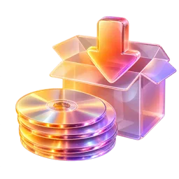
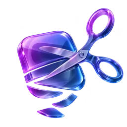
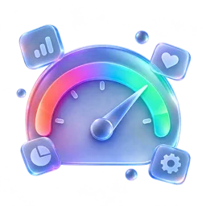
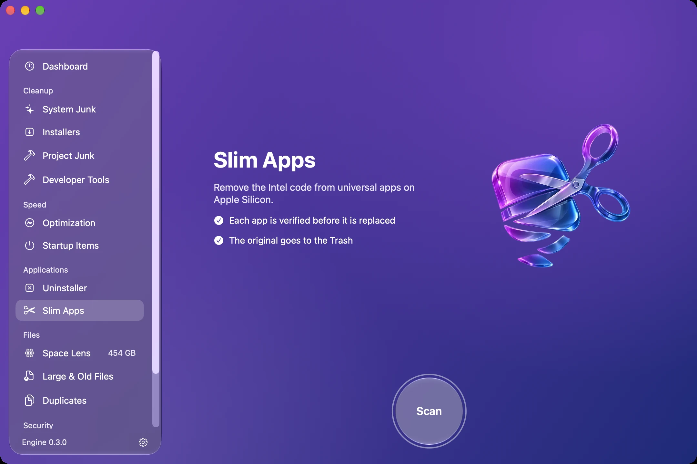

System JunkRác hệ thống
Caches, logs, temporary files and leftovers of apps you already removed. Never touches your documents.Bộ nhớ đệm, nhật ký, tệp tạm và phần sót lại của ứng dụng đã gỡ. Không bao giờ đụng vào tài liệu của bạn.
A free, open-source disk cleaner for macOS and Windows. Fast Rust engine, and nothing is removed until you have reviewed it. Trình dọn ổ đĩa miễn phí, mã nguồn mở cho macOS và Windows. Engine Rust nhanh, và không có gì bị xóa trước khi bạn xem lại.
curl -fsSL https://raw.githubusercontent.com/BuiHung1612/OpenCleaner/main/install.sh | sh
Paste in Terminal to install or update. No Gatekeeper prompt this way.Dán vào Terminal để cài hoặc cập nhật. Cách này không hiện hộp thoại Gatekeeper.
brew tap buihung1612/opencleaner && brew trust buihung1612/opencleaner && brew install --cask opencleaner
Adds the OpenCleaner tap and installs the app as a cask.Thêm tap của OpenCleaner và cài ứng dụng dưới dạng cask.


Grouped as in the app's sidebar, each in its own color. Every tool scans first and shows you what it found. You choose what goes.Xếp nhóm như thanh bên của ứng dụng, mỗi công cụ một màu. Công cụ nào cũng quét trước và cho bạn xem những gì tìm thấy. Bạn chọn thứ cần bỏ.
Caches, logs, temporary files and leftovers of apps you already removed. Never touches your documents.Bộ nhớ đệm, nhật ký, tệp tạm và phần sót lại của ứng dụng đã gỡ. Không bao giờ đụng vào tài liệu của bạn.

Leftover .dmg, .pkg, .iso, .xip and .zip installers, each with its size.Các tệp cài đặt .dmg, .pkg, .iso, .xip, .zip còn sót, kèm dung lượng từng tệp.

Rebuildable build folders: node_modules, target, build, dist and more. Lists projects touched in the last 7 days but leaves them unticked.Thư mục build dựng lại được: node_modules, target, build, dist… Dự án sửa trong 7 ngày gần đây được liệt kê nhưng không tự đánh dấu.
Give back space held by Docker and Xcode's iOS Simulators, with their own cleanup commands. Nothing runs until you press Clean.Lấy lại dung lượng Docker và iOS Simulator của Xcode đang giữ, bằng chính lệnh dọn của chúng. Không có gì chạy cho đến khi bạn bấm Dọn dẹp.

Refresh system caches and services, and repair safe maintenance issues. Only safe, reversible fixes.Làm mới bộ nhớ đệm và dịch vụ hệ thống, sửa các lỗi bảo trì an toàn. Chỉ áp dụng các sửa đổi an toàn, hoàn tác được.

See what starts when you log in, turn off what you do not need, and which apps hold privacy permissions. System items are shown, never changed.Xem những gì chạy khi đăng nhập, tắt thứ không cần, và ứng dụng nào đang giữ quyền riêng tư. Mục hệ thống chỉ hiển thị, không bị thay đổi.

Remove apps together with their caches, preferences and support files. Apps go to the Trash. On Windows it runs each app's own uninstaller.Gỡ ứng dụng cùng bộ nhớ đệm, tùy chọn và tệp hỗ trợ của nó. Ứng dụng vào Thùng rác. Trên Windows, chạy trình gỡ của chính ứng dụng.

Remove the Intel code from universal apps on Apple Silicon. Each app is verified before it is replaced; the original goes to the Trash.Gỡ phần mã Intel khỏi ứng dụng universal trên Apple Silicon. Mỗi ứng dụng được kiểm tra trước khi thay; bản gốc vào Thùng rác.
See which folders take the space on each disk, and move what you do not need to the Trash (the Recycle Bin on Windows).Xem thư mục nào chiếm chỗ trên từng ổ đĩa, và chuyển thứ không cần vào Thùng rác.

Big files you have not opened for months, and old screenshots on the Desktop. Looks only in your own folders.Tệp lớn bạn không mở trong nhiều tháng, và ảnh chụp màn hình cũ trên Màn hình nền. Chỉ tìm trong thư mục của bạn.

Files whose contents are exactly the same, compared byte by byte. Keep one copy of each.Các tệp có nội dung giống hệt nhau, so sánh từng byte. Giữ lại một bản của mỗi tệp.
Use your fingerprint instead of typing your password in Terminal. One-time setup, easy to turn off again.Dùng vân tay thay vì gõ mật khẩu trong Terminal. Thiết lập một lần, dễ tắt lại.

Disk, memory and CPU at a glance, with suggestions of what to clean.Ổ đĩa, bộ nhớ và CPU trong một cái nhìn, kèm gợi ý nên dọn gì.

Every removal attempt is written down, so you can see what went and where.Mọi lần xóa đều được ghi lại, để bạn biết thứ gì đã đi và đi đâu.
Let System Junk run on a schedule while OpenCleaner is open.Cho Rác hệ thống tự chạy theo lịch khi OpenCleaner đang mở.
The Windows app is in English for now.Bản Windows hiện chỉ có tiếng Anh.
Every tool has its own color, with glass panels on top, in the macOS 26 style. Screenshots from the macOS app.Mỗi công cụ có màu riêng, với các tấm kính phía trên, theo phong cách macOS 26. Ảnh chụp từ ứng dụng macOS.



The engine is OpenCleaner's own, written in Rust and linked into the app: no helper processes, one code base for macOS and Windows.Engine do OpenCleaner tự viết bằng Rust và liên kết thẳng vào ứng dụng: không có tiến trình phụ, một mã nguồn cho cả macOS và Windows.
for Space Lens to read the startup disk again (about 450 GB used)để Space Lens đọc lại ổ khởi động (đã dùng khoảng 450 GB)
for a first System Junk scan; 0.1 s the next timecho lần quét Rác hệ thống đầu tiên; 0,1 s ở lần sau
CPU when the app sits idleCPU khi ứng dụng để không
of memory when idlebộ nhớ khi để không
| TaskTác vụ | First runLần đầu | AgainLần sau | Peak RAMRAM tối đa |
|---|---|---|---|
| System Junk scanQuét Rác hệ thống | 6.5 s | 0.1 s0,1 s | 25 MiB |
| Space Lens: ~/LibrarySpace Lens: ~/Library | 5.0 s | 0.20 s0,20 s | 36 MiB |
| Space Lens: startup diskSpace Lens: ổ khởi động | 20.5 s | 1.1 s1,1 s | 144 MiB |
| App list with sizesDanh sách ứng dụng kèm dung lượng | 2.0 s | 0.05 s0,05 s | 11 MiB |
| Project Junk searchTìm Rác dự án | 4.4 s | 10 MiB | |
| InstallersTệp cài đặt | 0.08 s | 6 MiB | |
| Dashboard readingĐọc số liệu Tổng quan | 0.38 s | 7 MiB |
Apple M2 Mac mini, 16 GB, macOS 27.2, about 450 GB used, load average 5–6; the engine on its own, reading only, median of 3 runs. "Again": System Junk shows the last sizes at once while it measures again (exact again after 4.7 s); Space Lens asks macOS which folders changed and reads only those. Idle, the app uses about 0.1% CPU and 45 MB of memory. Apple M2 Mac mini, 16 GB, macOS 27.2, đã dùng khoảng 450 GB, load average 5–6; engine chạy riêng, chỉ đọc, trung vị của 3 lần. "Lần sau": Rác hệ thống hiện ngay số đo lần trước trong lúc đo lại (chính xác trở lại sau 4,7 s); Space Lens hỏi macOS thư mục nào đã đổi và chỉ đọc lại các thư mục đó. Khi để không, ứng dụng dùng khoảng 0,1% CPU và 45 MB bộ nhớ.
OpenCleaner is not notarized by Apple and the Windows exe is not code-signed, so a browser download needs one extra step on first launch.OpenCleaner chưa được Apple notarize và tệp exe cho Windows chưa ký số, nên tệp tải bằng trình duyệt cần thêm một bước ở lần mở đầu tiên.
Easiest: paste this in Terminal. It downloads the latest release, checks the app's signature and copies it to Applications (an older copy goes to the Trash). The app opens directly, without the "could not verify" prompt. Run it again to update.
Dễ nhất: dán lệnh này vào Terminal. Lệnh tải bản mới nhất, kiểm tra chữ ký của ứng dụng rồi chép vào Applications (bản cũ vào Thùng rác). Ứng dụng mở ngay, không hiện thông báo "không thể xác minh". Chạy lại để cập nhật.
curl -fsSL https://raw.githubusercontent.com/BuiHung1612/OpenCleaner/main/install.sh | sh
Add the tap and install the cask. The cask clears the quarantine flag, so there is no Gatekeeper prompt either.
Thêm tap rồi cài cask. Cask gỡ cờ quarantine, nên cũng không hiện hộp thoại Gatekeeper.
brew tap buihung1612/opencleaner && brew trust buihung1612/opencleaner && brew install --cask opencleaner
Run it as is. SmartScreen may warn about an unknown publisher: click More info → Run anyway.
Chạy trực tiếp. SmartScreen có thể cảnh báo nhà phát hành không xác định: bấm More info → Run anyway.